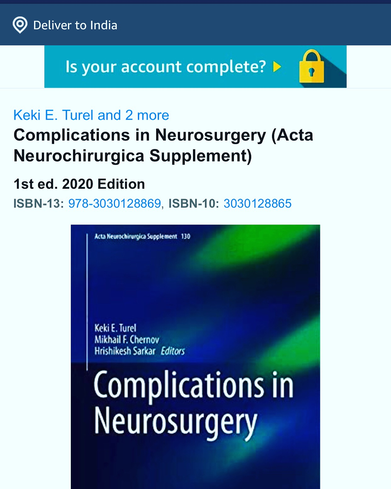

Publications
1: GUaRDIAN Consortium, Sivasubbu S, Scaria V. Genomics of rare genetic diseases-experiences from India. Hum Genomics. 2019 Sep 25;14(1):52. PubMed PMID: 31554517
2: Ghate PS, Bhanage A, Sarkar H, Katkar A. Efficacy of Amantadine in Improving Cognitive Dysfunction in Adults with Severe Traumatic Brain Injury in Indian Population: A Pilot Study. Asian J Neurosurg. 2018 Jul- Sep;13(3):647-650. PubMed PMID: 30283519
3: Sarkar H, Vijaya G, Mitta S. Rare occurrence of intracranial epidermoid tumor in an unusual location with atypical radiological features. Asian J Neurosurg. 2015 Oct-Dec;10(4):319-21.PubMed PMID: 26425165
4: Sarkar H, Karthikeyan A. Ventriculo-ureteric shunt surgery: thou shalt not be forgotten of me! Neurol India. 2013 Jul-Aug;61(4):448-50. PubMed PMID: 24005754.
5: Sarkar H, K S, Ghosh S. Pure intraventricular origin of gliosarcoma - a rare entity. Turk Neurosurg. 2013;23(3):392-4.PubMed PMID: 23756982.
6: Marcus HJ, Sarkar H, Mindermann T, Reisch R. Keyhole supracerebellar transtentorial transcollateral sulcus approach to the lateral ventricle. Neurosurgery. 2013 Dec;73(2 Suppl Operative):onsE295-301; discussion onsE301. PubMed PMID: 23624413.
7: Sarkar H, Ghosh S. Bilateral "mirror" cystic meningiomas: a rare radiological presentation. Neurol India. 2011. PubMed PMID: 21483149.
8: Sarkar H, Thakar S, Kumar SS, Moorthy RK, Rajshekhar V. A computed tomography-based localizer to determine the entry site of the ventricular end of a parietal ventriculoperitoneal shunt. Neurosurgery. 2011 Mar;68(1 Suppl Operative):162-7; discussion 167. PubMed PMID: 21304331.
9. Co- Editor, Textbook on Complications in Neurosurgery, Springer Verlag due on Jan 2021. ISBN-10: 3030128865
10. Editorial - Slit Ventricle Syndrome - Rare cause of headache in children with ventriculoperitoneal shunt, Editorial. Vol 20, issue 2, Aug 5, 2018, Orion Medical Journal.
11.Moorthy RK, Sarkar H, Rajshekhar V. Conservative antibiotic policy in patients undergoing non-trauma cranial surgery does not result in higher rates of postoperative meningitis: an audit of nine years of narrow- spectrum prophylaxis. Br J Neurosurg. 2013 Aug;27(4):497-502. PMID: 23477613.
12. Deepu, D, Hrishikesh, S, Suma, MT, Zoya, V. (2011). Posterior fossa infarct following Viper bite: a paradox. Journal of Venomous
Animals and Toxins including Tropical Diseases, 17(3), 358-360. https://
doi.org/10.1590/S1678-91992011000300017
13. Chapter - Review article in CME book of Neurological Society of India, December 2006. Sarkar H, Joseph M
14. Chapter - “Are we ready for hypertonic saline in head injury”. 2005 publication. Critical Care Update, Sarkar H, Joseph M, Critical Care Update 2005, August (Pages 74-78). Review article.

Co Author - Textbook of Complications in Neurosurgery